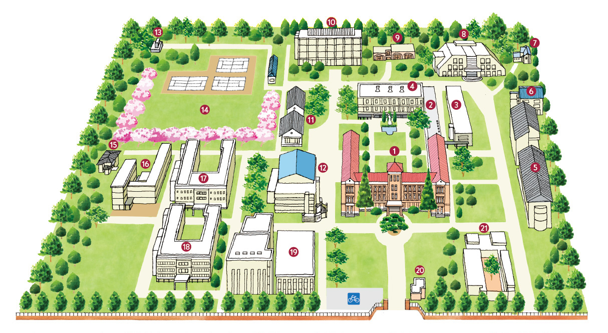
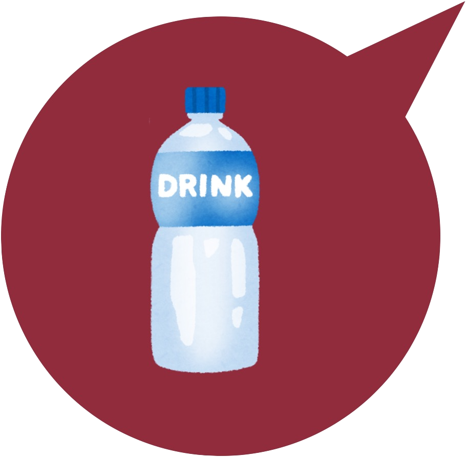
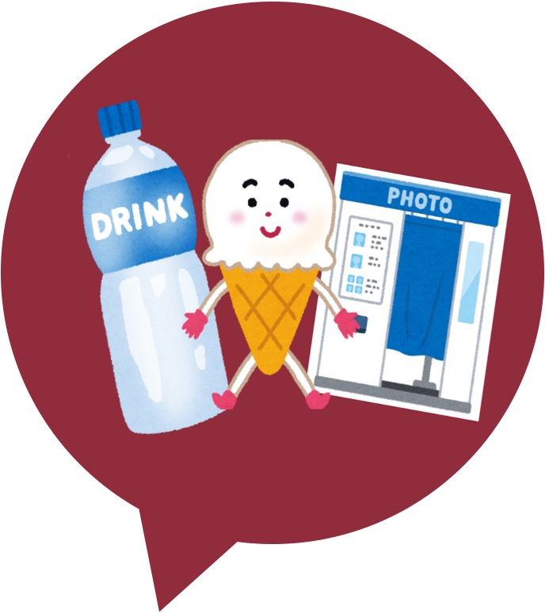
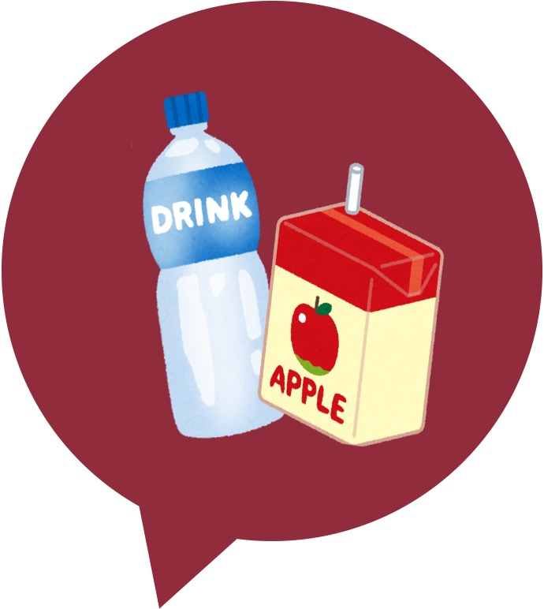
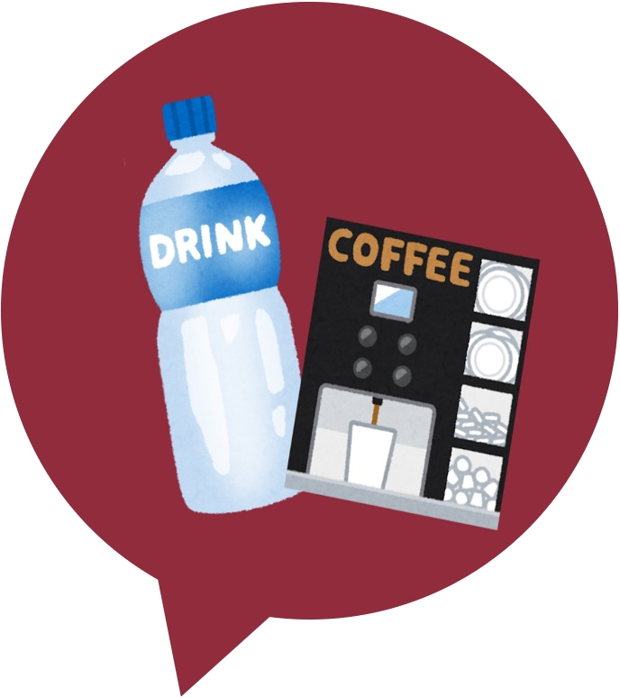
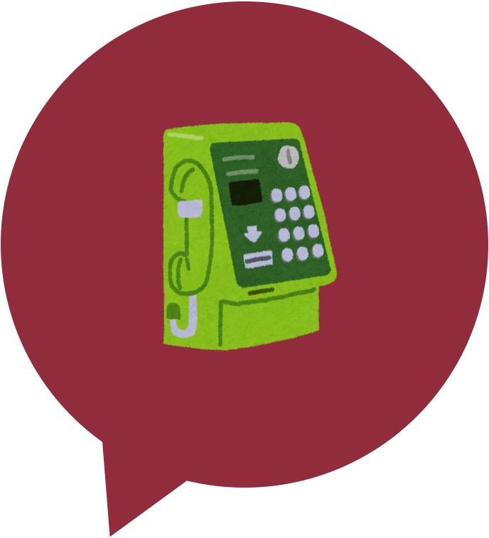

{% load static %}

<html>
<head>

    <meta name="viewport" content="width=device-width,initial-scale=1">

    <title>てtsudaっぷ。</title> <!--サイト名-->
    <!-- <link rel="stylesheet" href="menupage.css"> -->
    <link rel="stylesheet" href="//maxcdn.bootstrapcdn.com/bootstrap/3.2.0/css/bootstrap.min.css">
    <link rel="stylesheet" href="//maxcdn.bootstrapcdn.com/bootstrap/3.2.0/css/bootstrap-theme.min.css">
    <link href='//fonts.googleapis.com/css?family=Lobster&subset=latin,latin-ext' rel='stylesheet' type='text/css'>
    <link rel="stylesheet" href="{% static 'css/map.css' %}">
</head>
<body>
  <div class="page-header">
    <div style="text-align: center">
      <h1>てtsudaっぷ。</h1> <!--ページタイトル-->
    </div>
    <a id="btn_menu6" class="btn_menu" href="/menupage"><span></span><span>MenuPage</span><span>CLOSE</span></a>
  </div>

<h2>　マップページ</h2>
<div class = "margin">
<h4>　※ は自動販売機や公衆電話の場所を示しています。<br>
   　　 詳細はページ下部の「自販機の場所」にあります。</h4>
 </div>
<br>
<!-- 試しに書いてみた -->
<br>
<h5 style="text-align: right">※画像拡大を推奨します　　　　</h5>
<!-- <div class="image_mouseover_1"> -->
<div class="relative">

 <!--7号館前の自販機-->
 <!--食堂裏のアイスがある所-->
 <!--食堂とカフェルポの間-->
<!--食堂の中-->
<!--食堂の裏の公衆電話-->
<!--5号館前の自販機-->
<!--1号館前の自販機-->
</div>
<!-- </div> -->
<h2><br></h2>

<div class="button_line">
<div class="button03">
  <a href="{% url 'move_to_honkan' %}">　①本館　　　</a>
</div>
<div class="button03">
  <a href="{% url 'move_to_shinkan' %}">　②新館　　　</a>
</div>
</div>

<h1> </h1>
<div class="button_line">
<div class="button03">
  <a href="{% url 'move_to_minami' %}">　③南校舎　　</a>
</div>
<div class="button03">
  <a href="{% url 'move_to_tokkyo' %}">　④特別教室　</a>
</div>
</div>

<h1> </h1>
<div class="button_line">
<div class="button03">
  <a href="{% url 'move_to_ichigokan' %}">　⑤1号館　　</a>
</div>
<div class="button03">
  <a href="{% url 'move_to_gogokan' %}">　⑧5号館　　</a>
</div>
</div>

<h1> </h1>
<div class="button_line">
<div class="button03">
  <a href="{% url 'move_to_nanagokan' %}">　⑩7号館　　</a>
</div>
<div class="button03">
  <a href="{% url 'move_to_shokudo' %}">　⑫食堂　　　</a>
</div>
</div>

<h1> </h1>
<div class="button_line">
<div class="button03">
  <a href="{% url 'move_to_library' %}">　⑲図書館　　</a>
</div>
</div>
<br>

<div class="button_line">
<div class="button04">
  <a href="{% url 'move_to_eigyoujikan' %}">　各施設の営業時間　</a>
</div>
</div>
<br>

<div class="button_line">
<div class="button05">
  <a href="{% url 'move_to_jihanki' %}">　自販機の場所　　　</a>
</div>
</div>
</div>

<h1><br></h1>

  <div class="page-footer">
    <footer>
    </footer>
  </div>

</body>
</html>
